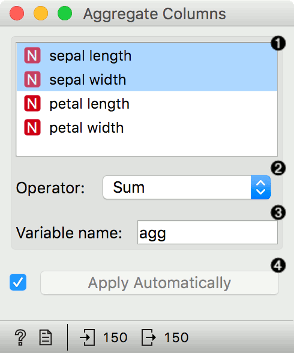
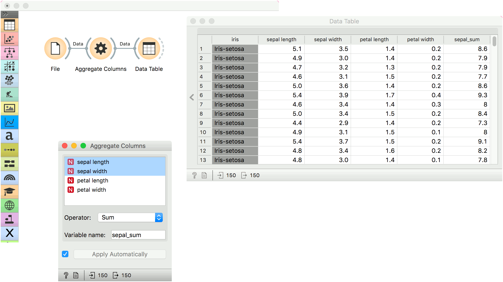

Aggregate Columns
Compute a sum, max, min … of selected columns.
Inputs
- Data: input dataset
Outputs
- Data: extended dataset
Aggregate Columns outputs an aggregation of selected columns, for example a sum, min, max, etc.

- Selected attributes.
- Operator for aggregation:
- sum
- product
- min
- max
- mean
- variance
- median
- Set the name of the computed attribute.
- If Apply automatically is ticked, changes will be communicated automatically. Alternatively, click Apply.
Example
We will use iris data from the File widget for this example and connect it to Aggregate Columns.
Say we wish to compute a sum of sepal_length and sepal_width attributes. We select the two attributes from the list.
